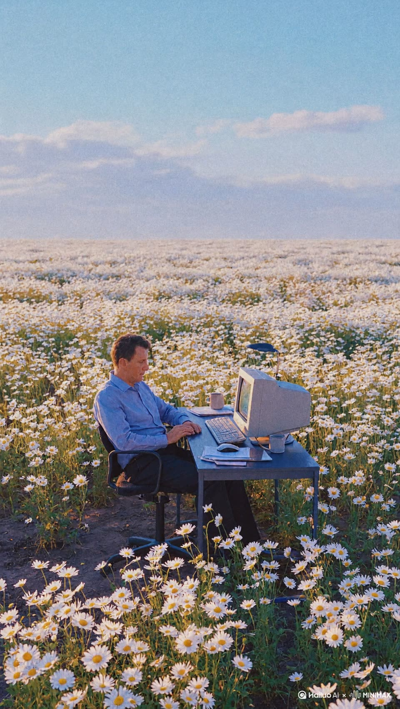

MiniMax H3 Image (official account): dreamcore office worker at a CRT computer in an endless field of white daisies (Kodak Portra 400 look)

A quiet, absurd conceptual photograph: one man in a light-blue shirt working at a CRT desk in the middle of an endless daisy field, shot small and symmetrical with the horizon one-third from the top and a large pale-blue sky. The prompt specifies performance as well as framing ("His posture is natural, with no exaggerated performance or forced humor"), sets warm side light against blue-violet shadows, and names the film emulation ("Kodak Portra 400 color negative film: fine film grain, gentle highlight rolloff"). The mood line, "like a moment from a dream no one has bothered to explain", is what the image delivers. A good reference for surreal, deadpan brand stills.
Prompt
A surrealist photograph with intense poetic sensibility and quiet absurdity, fusing Dreamcore aesthetics, minimalist conceptual photography, vintage film texture, and contemporary fine-art photography. In the middle of a boundless sea of white daisies, a middle-aged man in a light blue shirt and dark trousers sits alone on a modern office chair, diligently working at an old-fashioned CRT desktop computer. In front of him sits a clean, deep blue-gray office desk, holding a heavy vintage computer monitor, a keyboard, and a few sparse office items. His expression is calm and focused, as if entirely unaware of the strangeness of his surroundings. His posture is natural, with no exaggerated performance or forced humor. The desk and chair are placed directly in the center of the flower field, with no surrounding office, road, or man-made structure — only an endless expanse of white daisies stretching to the horizon. The composition is minimal and strongly symmetrical, shot from a distance. The figure and desk sit slightly below center, occupying only a small portion of the frame. The flower field extends from the foreground all the way to the far horizon, where densely packed white daisies form a continuous, finely textured carpet. The horizon line falls roughly one-third from the top of the frame, allowing the sky to occupy a large area of negative space — a soft, clean pale blue, free of complex cloud formations. Warm late-afternoon sunlight enters from the side, casting soft golden highlights across the white petals, the man’s face, and the desk. The shadows carry a faint blue-violet hue, producing a warm-cool contrast that feels both tender and romantic. The overall palette centers on sky blue, cream white, daisy yellow, soft grass green, and muted gray-blue — low contrast, slightly faded, soft and luminous. Emulates Kodak Portra 400 color negative film: fine film grain, gentle highlight rolloff, natural skin tones, and slightly dreamlike color rendering. Shot from a slightly distant observational perspective, with authentic natural light, realistic plant textures, and believable object shadows — lending the impossible scene the full credibility of documentary photography. The overall mood is quiet, absurd, romantic, solitary, and tinged with dry humor — like a moment from a dream no one has bothered to explain. Surreal everyday photography, dreamcore aesthetic, minimalist absurdism, conceptual fine art photography, lonely office worker in a field of daisies, vintage CRT computer, endless flower meadow, pastel blue sky, warm afternoon sunlight, subtle analog film grain, poetic surrealism, cinematic realism. Vertical 9:16 composition, no text, no watermarks.
Our Seedance 2.5 adaptation
[ADAPTED for Seedance 2.5 by Grok Bot; not the creator's prompt. Follows the official BytePlus Seedance 2.5 prompt guide and its official sd25-pe prompt-optimizer skill: parameters only on the API line (not in the prompt body), subject + action + scene, then visuals, camera (move, subject, start, direction, arrival) and sound; only the source's own exclusions are kept.] API: duration 6, ratio adaptive, resolution 1080p, generate_audio true; first_frame = the MiniMax H3 Image daisy-field still. 【Subject】The middle-aged man in a light blue shirt at the blue-grey desk with the old CRT computer, alone in the endless field of white daisies, exactly as in the first frame. 【Action】He keeps typing calmly, pauses once to read the screen, then continues. A light breeze moves through the daisies in slow waves toward the horizon. No exaggerated performance or humour. 【Camera】Static, distant, symmetrical framing with the horizon one-third from the top, as in the frame. 【Visuals】Warm late-afternoon side light, faint blue-violet shadows, Kodak Portra 400 look with fine grain and gentle highlight rolloff. No text or watermark. 【Sound】Soft keyboard clicks, a faint CRT hum, wind through flowers, distant birdsong.
Tags: dreamcore, deadpan surreal, negative-space sky, symmetry, warm/cool light contrast, Kodak Portra 400, office in nature, vertical 9:16, MiniMax H3 Image